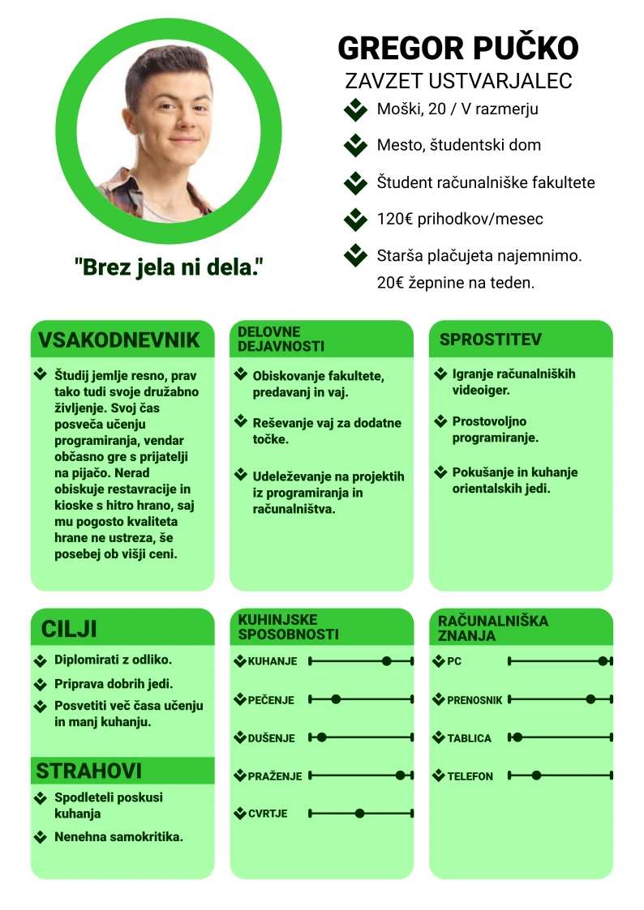
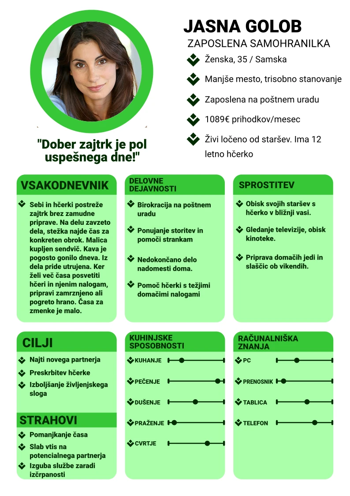

OBLIKOVANJE PERSON
Prva naloga je zajemala oblikovanje person, ki bi lahko predstavljale vrsto naših potencialnih uporabnikov. Delo je zajemalo iskanje lastnosti in določanje karakteristik person, njihovo ozadje
ter želje, trenutne izkušnje s kuhanjem in druge lastnosti, ki bi bile povezano z uporabniki aplikacije Kuharček.
Za ustrezen prikaz person smo zasnovali dve zelo različni osebi, ena študentskih let, ki ima dovolj hitre hrane in eno mlajšo odraslo osebo, ki zaradi prenatrpanega delavnika težko najde čas za kuhanje.
Obe personi sta predstavljeni spodaj.

